Chapter 8 Elman Jordan 1
Code
#-------------------------------------------------
# 1. Librería
#-------------------------------------------------
if (!requireNamespace("RSNNS", quietly = TRUE)) install.packages("RSNNS")
if (!requireNamespace("ggplot2", quietly = TRUE)) install.packages("ggplot2")
library(RSNNS); library(ggplot2)
#-------------------------------------------------
# 2. Helpers: ventanas y partición temporal
#-------------------------------------------------
crear_ventanas <- function(serie_ts, n_lags = 5) {
df <- as.data.frame(embed(serie_ts, n_lags + 1))
colnames(df) <- c("y", paste0("lag", seq_len(n_lags)))
df[nrow(df):1, ] # orden ascendente
}
particionar_datos <- function(df, prop_train = 0.7, prop_valid = 0.15) {
n <- nrow(df); nt <- floor(n * prop_train); nv <- floor(n * prop_valid)
list(train = df[1:nt, ],
valid = df[(nt + 1):(nt + nv), ],
test = df[(nt + nv + 1):n, ])
}
#-------------------------------------------------
# 3. Entrenamiento + forecast ELMAN / JORDAN
#-------------------------------------------------
entrenar_rnn <- function(partes,
tipo = c("elman", "jordan"),
size_hidden = 8,
maxit = 500) {
tipo <- match.arg(tipo)
y_tr <- partes$train$y
min_y <- min(y_tr); max_y <- max(y_tr)
esc <- function(v) (v - min_y) / (max_y - min_y)
des <- function(v) v * (max_y - min_y) + min_y
esc_df <- function(d) as.data.frame(lapply(d, esc))
tr_sc <- esc_df(partes$train); te_sc <- esc_df(partes$test)
x_tr <- as.matrix(tr_sc[ , -1]); y_tr_sc <- as.matrix(tr_sc[ , 1])
x_te <- as.matrix(te_sc[ , -1]); y_te <- partes$test$y
rnn <- if (tipo == "elman") {
RSNNS::elman (x_tr, y_tr_sc, size = size_hidden,
learnFunc = "Std_Backpropagation", linOut = TRUE, maxit = maxit)
} else {
RSNNS::jordan(x_tr, y_tr_sc, size = size_hidden,
learnFunc = "Std_Backpropagation", linOut = TRUE, maxit = maxit)
}
pred_te <- des(predict(rnn, x_te))
mae <- Metrics::mae (y_te, pred_te)
rmse <- Metrics::rmse(y_te, pred_te)
mape <- Metrics::mape(y_te, pred_te) * 100
# ------ forecast 30 pasos -------
n_lags <- ncol(x_tr)
ventana <- as.numeric(tail(partes$test, 1)[ , paste0("lag", n_lags:1)])
futuros <- numeric(30)
for (h in 1:30) {
ventana_sc <- esc(ventana)
pred_h <- des(predict(rnn, matrix(ventana_sc, 1)))
futuros[h] <- pred_h
ventana <- c(pred_h, ventana[1:(n_lags - 1)])
}
list(modelo = rnn, mae = mae, rmse = rmse, mape = mape, forecast_30 = futuros)
}
#-------------------------------------------------
# 4. Entrena para los 9 índices
# (series_preparadas DEBE existir del paso anterior del trabajo)
#-------------------------------------------------
resultados_elman <- list(); resultados_jordan <- list()
metricas_elman <- data.frame(); metricas_jordan <- data.frame()
for (idx in names(series_preparadas)) {
ts_i <- series_preparadas[[idx]]
if (length(ts_i) < 100) next # evita cortas
partes <- particionar_datos(crear_ventanas(ts_i, 5))
re <- entrenar_rnn(partes, "elman")
resultados_elman [[idx]] <- re
metricas_elman <- rbind(metricas_elman,
data.frame(Indice = idx,
MAE = round(re$mae , 3),
RMSE = round(re$rmse, 3),
MAPE = round(re$mape, 3)))
rj <- entrenar_rnn(partes, "jordan")
resultados_jordan[[idx]] <- rj
metricas_jordan <- rbind(metricas_jordan,
data.frame(Indice = idx,
MAE = round(rj$mae , 3),
RMSE = round(rj$rmse, 3),
MAPE = round(rj$mape, 3)))
}
#-------------------------------------------------
# 5. Tablas
#-------------------------------------------------
knitr::kable(metricas_elman,
caption = "Desempeño de las redes ELMAN (set de prueba)")| Indice | MAE | RMSE | MAPE |
|---|---|---|---|
| SP500 | 0.411 | 0.415 | 5.151 |
| DowJones | 9410.627 | 9519.925 | 35.877 |
| Nasdaq | 0.674 | 0.676 | 7.505 |
| DAX | 2561.080 | 2563.503 | 12882.393 |
| CAC40 | 1162.902 | 1277.695 | 20.816 |
| FTSE100 | 6218.153 | 6218.513 | 85.464 |
| Nikkei225 | 0.038 | 0.044 | 0.385 |
| HangSeng | 13478.049 | 13581.382 | 49.178 |
| ShanghaiComposite | 1118.396 | 1144.867 | 37.894 |
| Indice | MAE | RMSE | MAPE |
|---|---|---|---|
| SP500 | 0.023 | 0.028 | 0.284 |
| DowJones | 1443.772 | 1812.026 | 5.546 |
| Nasdaq | 0.575 | 0.579 | 6.403 |
| DAX | 3367.531 | 3369.085 | 17026.860 |
| CAC40 | 345.190 | 388.635 | 6.166 |
| FTSE100 | 3575.794 | 3579.661 | 49.193 |
| Nikkei225 | 0.270 | 0.274 | 2.707 |
| HangSeng | 41760.066 | 41777.625 | 151.352 |
| ShanghaiComposite | 1517.499 | 1531.470 | 51.637 |
Code
#-------------------------------------------------
# 6. Gráficos: misma escala que la red (log o diff)
#-------------------------------------------------
## helper: data.frame de la serie transformada (misma longitud que ts entrenado)
serie_transformada_df <- function(indice){
ts_tr <- series_preparadas[[indice]]
fechas <- tail(index(cierres_zoo[[indice]]), length(ts_tr)) # fechas compatibles
data.frame(Fecha = fechas, Valor = as.numeric(ts_tr))
}
## función de trazado
plot_rnn_forecast_tr <- function(indice, res, modelo = "ELMAN"){
obs_df <- serie_transformada_df(indice)
ult_fec <- tail(obs_df$Fecha, 1)
fechas_f <- seq(ult_fec + 1, by = "day", length.out = length(res$forecast_30))
df_plot <- rbind(
data.frame(Fecha = obs_df$Fecha,
Valor = obs_df$Valor,
Serie = "Observado"),
data.frame(Fecha = fechas_f,
Valor = res$forecast_30,
Serie = "Pronóstico")
)
ggplot(df_plot, aes(Fecha, Valor, color = Serie, linetype = Serie)) +
geom_line(size = 0.8) +
scale_color_manual(values = c(Observado = "#1f77b4",
Pronóstico = "#d62728")) +
labs(title = paste("Pronóstico 30 días –", indice,
"(", modelo, "/ escala transformada)"),
x = NULL, y = "Valor transformado") +
theme_minimal()
}
## ---- mostrar todos los gráficos ----
# ELMAN
for (idx in names(resultados_elman)) {
print(plot_rnn_forecast_tr(idx, resultados_elman[[idx]], "ELMAN"))
}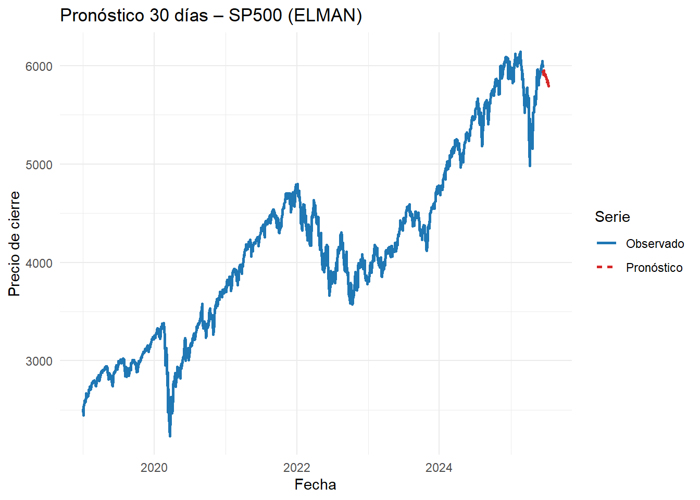


 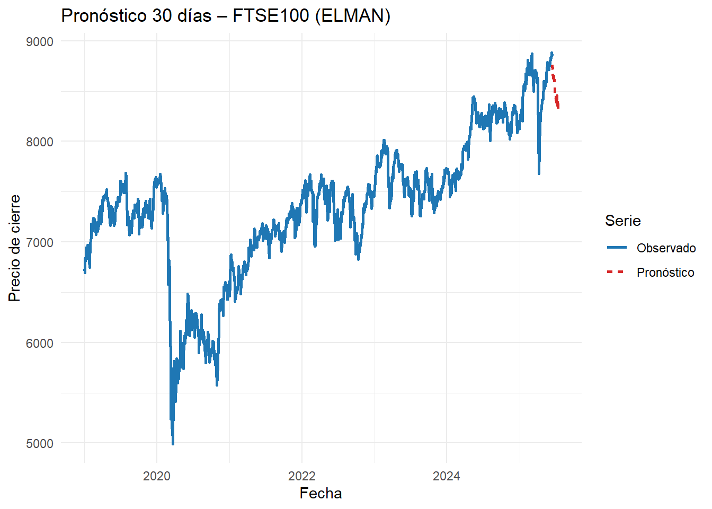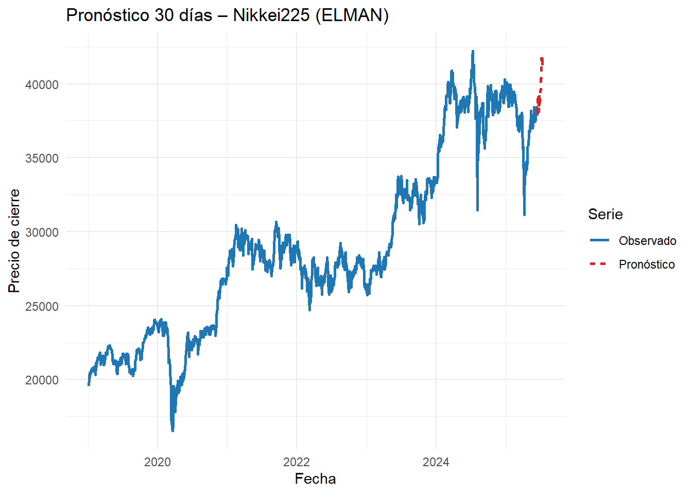
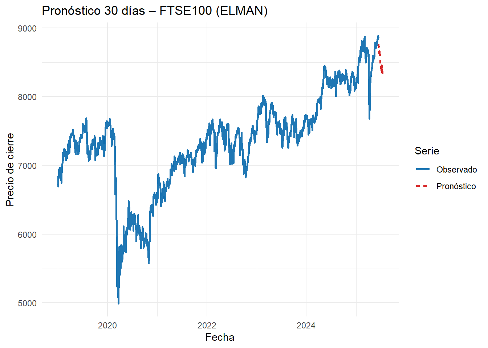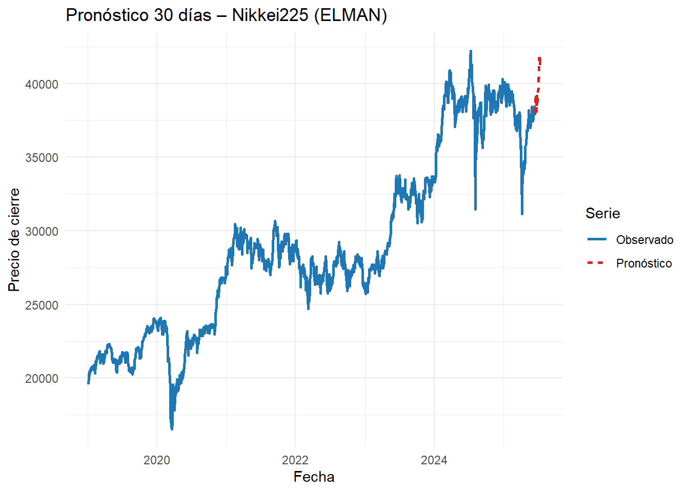
Code

 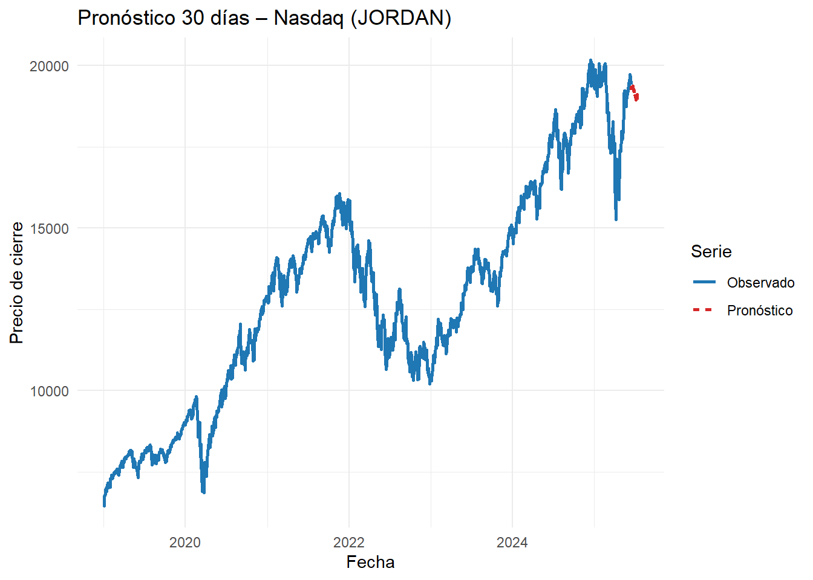
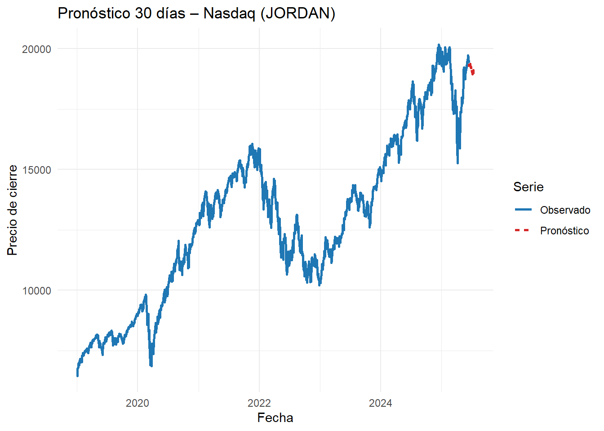
 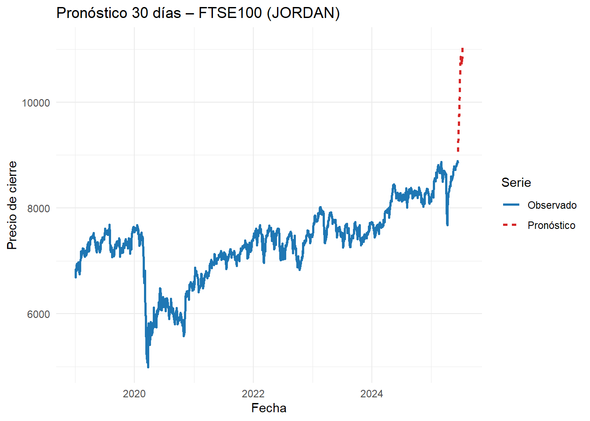
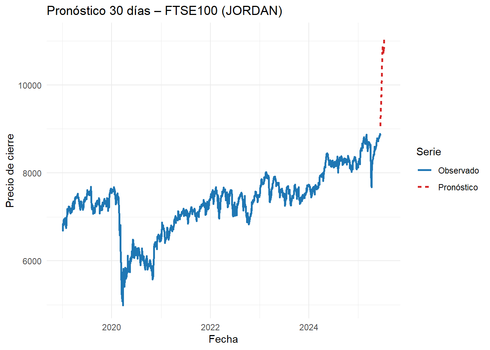 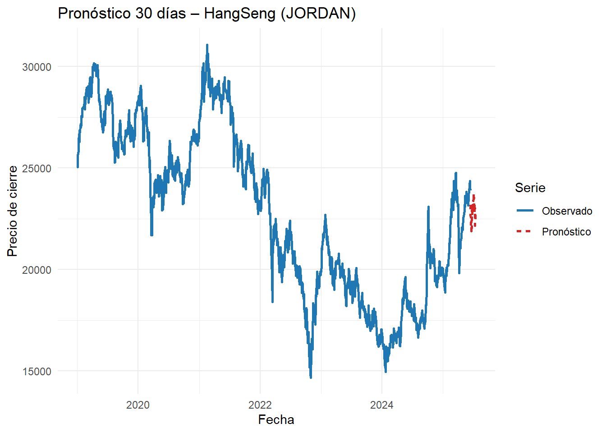
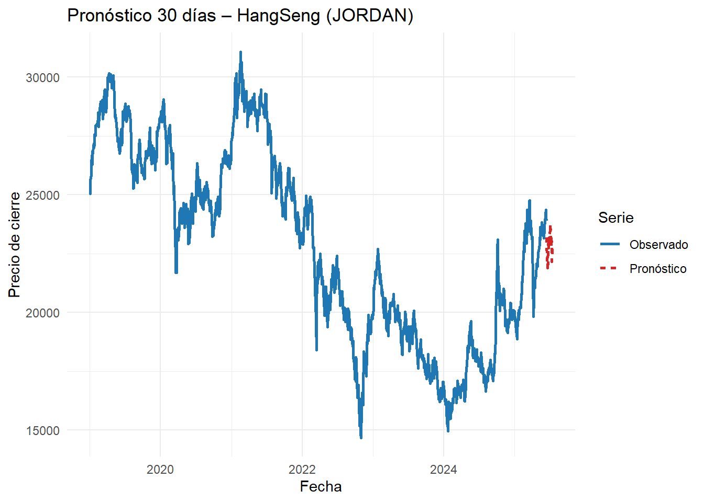